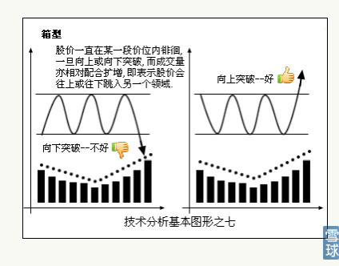
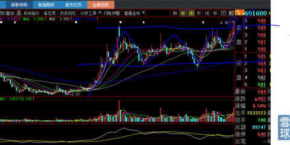
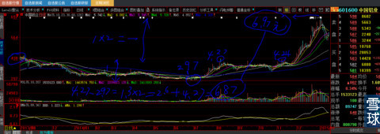
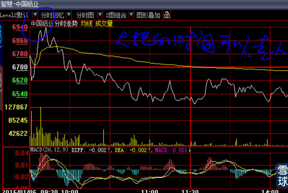

下图601600中国铝业这次的股价波动，因为有粉丝提它的问题，我翻到计算解释给他看，随便分享给大家。由于图形构筑的大小决定了就是这样的阶段性结果，未来如果有更大级别的波动图形，量度升幅就会有更大级别计算，我们看到的是绝对价格图形，所以你感觉突破后涨幅是突破前差额的2倍，如果用“%图形”或者“对数图”，就会过滤掉这些图形的误导。
这个方法是我15年前就掌握的，所以不要轻易下结论：心大的技术指标未来有用吗？任何技术指标一旦公开就会失效。
下面介绍一种平台型也就是箱体突破的量度升幅计算方法。
教科书中将的箱体平台是这样的，见下图，右边的图形就是想上突破的例子。

我们来看看下图，多么经典的平台箱体型突破啊！

我们再看下图，平台突破后的量度升幅全景图。
平台箱体的箱顶最高价是4.21元，平台箱体最低价是2.97元，4.27-2.97=1.3元*2个正常量度升幅差额=2.6元+4.27=目标价6.87元。

结果中国铝业在2014年1月6日早盘在触碰到6.97元，比量度升幅仅仅只高0.1元后开始中期回调之旅。见下图

OK，我知道有人会说：这都是市场的巧合，你别在这里卖弄了。
对的，市场就是由不同的人组成的，一定会有两个极端，追最高价套住和杀跌割肉到最低的一部分人，大部分人都是在中间交易的。
第一，不是我今天才知道这些。他奶奶的，老子15年前就掌握这个规律了。
第二、不是我卖弄，这些都是市场自己走出来的，又不是我用资金追涨杀跌出来的。上述都是市场客观的存在。
lxjdk@炒的是心:市场参与主体是人，心大的“量度升幅”是人眼的接受极限程度，其实也包含了市场心理学和贪婪与恐惧两个因素的组合。
炒的是心@lxjdk: 他奶奶的，你咋这么牛？一语道破天机。你真的有钱途，是真心夸你。
明镜无台@炒的是心：即使掌握了这种算法，也会在是鸡蛋还是石头的拷问中煎熬，在每日的K线的波动中容易迷失自己。所以，最终是掌握运用心法的人获胜，哪里是一个公式，一个技术那么简单！
炒的是心@明镜无台：